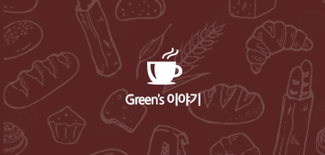
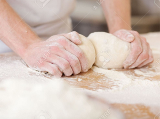
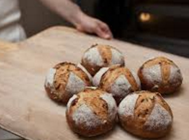
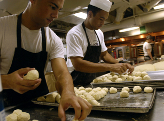
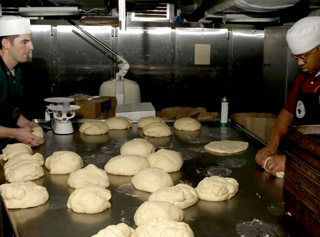
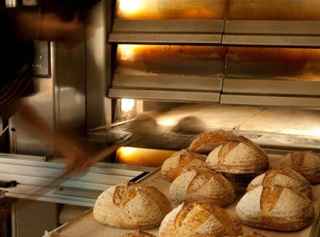

그린 베이커리: Green's 이야기

Green's 공간

복잡한 성형이 필요없이 쉽게 만들 수 있는 치아바타! 그중에서도 인기 많은 더블치즈

높은 내부 온도로 인해 발효 타이밍 잡기가 어렵고
빵이 눅눅해지기 쉬운 여름

밀가루를 만진다는 공통 분모

바게트보다도 훨씬 반죽이 진 치아바타

그날그날 환경에 따른 반죽의 상태
←
1
2
3
4
5
→